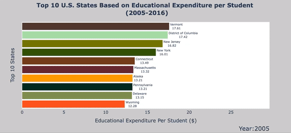
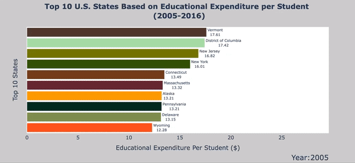

1st Educational SDG Subgoal: Raise government funding for schools.
Quantifying the Goal: In order to visualize this goal, I incorporated the educational expenditure dataset into my master dataset and then divided total expenditure by the number of students to find the educational expenditure per student. I used the racing bar plot package of plotly to see the evolution of the top spending states over a period from 2005 - 2016. I looked for key increases or decreases, as well as differences in the top states shown between each criteria.
Note: these graphs also come in the form of interactive webpages! Click here for the interactive total expenditure racing plot and here for the interactive expenditure per student racing bar plot!
SDG #1 Conclusions:
- The Expenditure per student section was dominated by the Northeast and Mid-Atlantic states. The only three states to appear in the top 10 outside of these regions are Alaska, Wyoming, and North Dakota. The Southeast and Southwest were not represented at all.
- The Expenditure per student section showed universal progress in spending towards education.
- Michigan had a drop from $20,490,000 to $18,000,000 in the total expenditure.
- The Northwest is the only region not represented in the top total expenditures.
 
